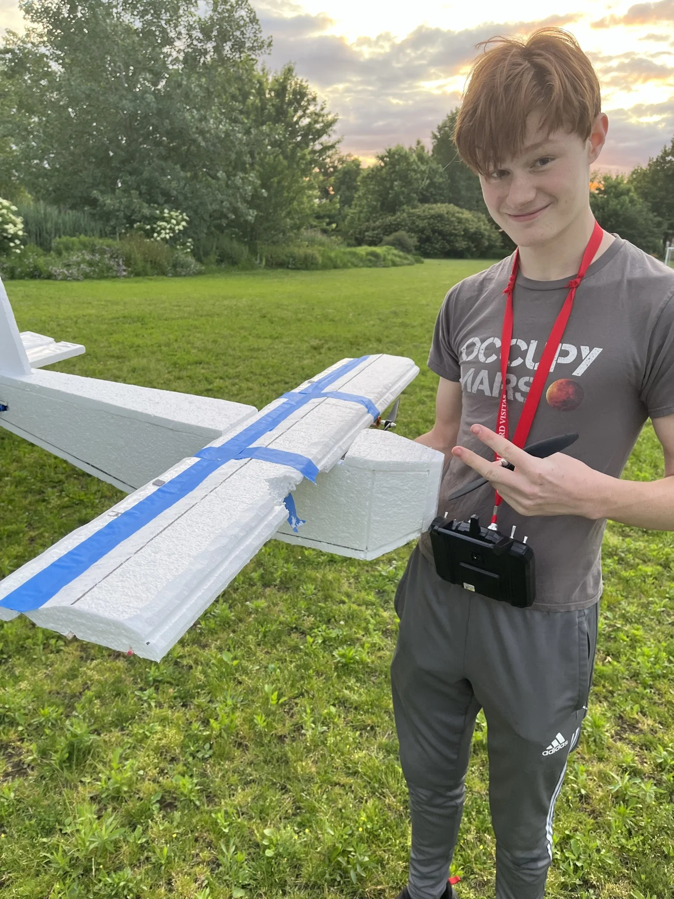

Ion-thruster RC boat
An experimental remote-controlled boat propelled by ionic wind, with no moving propulsion parts.
An original RC aircraft design refined through years of builds, flight attempts, repairs, and redesigns.

I developed successive versions of my own remote-controlled plane over several years. Many early versions crashed, sending me back to the workbench to repair the aircraft and change the design.
Each failed flight helped expose a weakness and suggest the next change. By June 2023, the project record included a successful flight with the tenth version.
This project made persistence tangible. It was not enough to improve a drawing: I had to build the revision, take it back outside, and try again.
Select any photo to open the full-size gallery.


An experimental remote-controlled boat propelled by ionic wind, with no moving propulsion parts.
A prototype exploration of a printed pitch-and-yaw gimbal and ground-test hardware.